Quand la Data rencontre la Culture & l'IA Générative.
Riche de 3,5 ans d'expérience en Marketing Operations & Content Strategy chez Susu, je raconte des histoires à travers l'image, la vidéo et les réseaux sociaux, en m'appuyant sur la donnée pour cadrer chaque décision et construire des campagnes et des expériences de marque à fort impact.
Une double culture : Data Marketing & Direction Créative
Serena MandjeckCreative Strategist
Native d'une génération qui a grandi avec les réseaux sociaux, je me suis très tôt interrogée sur leur fonctionnement : pourquoi un contenu devient viral, comment une marque se construit en ligne, ce qui fait qu'une audience s'attache à une histoire plutôt qu'à une autre. Cette curiosité est devenue un métier : je transforme aujourd'hui cette intuition en décisions, toujours validées par la donnée pour être sûre de faire le bon choix.
Finder2 éléments
Éducation
Expérience
Outils & Méthodes
Stack & Workflows
Trois piliers, un même réflexe : la donnée cadre la décision, l'image et la vidéo lui donnent un visage, le récit fait vivre la marque. Cliquez sur une carte pour voir comment ça se traduit au quotidien.
Data & Performance BI
Transformer des données brutes en décisions marketing claires, partagées et actionnables par toute l'équipe.
Power BILooker StudioExcel (TCD)Meta Ads Manager
Je relie les résultats des campagnes Meta Ads aux objectifs business, je construis des reportings clairs pour les équipes marketing et direction, et je structure la donnée pour qu'elle reste fiable dans la durée.
Generative AI & Process Automation
Concevoir des assistants IA sur-mesure et des process automatisés qui font vraiment gagner du temps aux équipes.
ChatGPTClaudeGeminiMakeNotionTypeformGems IA
Je conçois des assistants IA pensés pour des besoins précis (accélérer la production de contenu, fiabiliser l'analyse), puis j'automatise les workflows qui les entourent pour que ça tienne dans la durée. Je forme aussi les équipes pour que l'IA devienne un réflexe, pas un gadget.
Brand, Content & Growth Strategy
Raconter une marque à travers la photo, la vidéo et les réseaux sociaux, avec une voix claire qui rend le complexe accessible.
Photo & VidéoRéseaux SociauxCopywritingContent StrategyCommunity Building
Je conçois la direction photo et vidéo de mes projets (RACINE, Les Ateliers Creatown, OUI OUI B'DAY), j'écris les contenus qui portent la voix de la marque sur les réseaux sociaux, et je traduis des sujets techniques en messages compréhensibles pour des audiences B2B et B2C, avec toujours l'acquisition en ligne de mire.
Sélection
Projets
013 épisodes
RACINE3 pays · Cultural Storytelling
02
LES ATELIERS CREATOWNBrand Experience & Community
03
PODCAST VISION 360Content Engine & Media Strategy
04
OUI OUI B'DAY20 ans de B'DAY · Beyoncé
Aucun projet ne correspond à votre recherche.
Éducation
Éducation.app
2023 — 2025
INSEEC MSc & MBA
MSc Marketing & Data
Stratégie digitaleManagement de projet digitalCRMData & Marketing DigitalProcessus de création et design graphiqueScoring & Marketing prédictifCiblage et data marketing
2020 — 2023
INSEEC Paris
Bachelor Marketing Digital
Brand ManagementE-business et Marketing digitalManagement des réseaux sociauxInbound MarketingUX Design
Structuration des workflows d'automatisation autour des outils IA, pour qu'ils s'intègrent au quotidien
Formation des équipes à l'IA générative, pour en faire un réflexe plutôt qu'une nouveauté
Bilan de mission : plusieurs mois d'avance pris sur la rédaction d'articles et la création de posts sociaux, grâce à l'IA générative transformée en avantage opérationnel concret.
En parallèleCollectif créatif
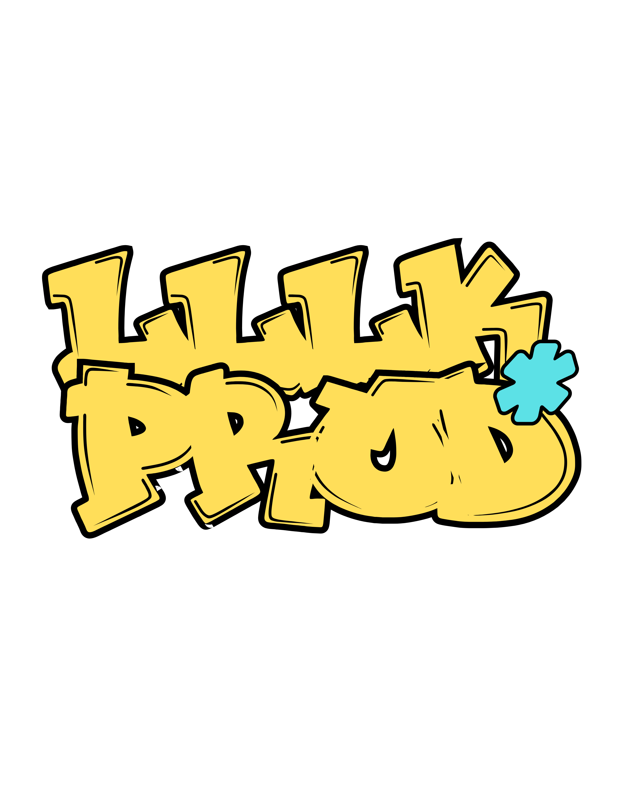
L
LLLK.PROD
Creative Strategist
Jeune agence créative qui rend les événements créatifs accessibles et rassemble les personnes créatives, quel que soit le budget de chacun.
Conception et pilotage de 3 éditions des Ateliers Creatown (une 4ᵉ en préparation), réunissant en moyenne une cinquantaine de participants
Définition de la stratégie de contenu et de la ligne éditoriale du collectif
Création de contenu autour des événements (stories, vlogs, photos) pour prolonger l'expérience sur les réseaux
Production de contenu créatif pour OUI OUI B'DAY (festival), à paraître en septembre 2026
Bilan de mission : un rôle stratégique dans la structuration créative d'un collectif en pleine croissance, avec déjà 3 éditions des Ateliers Creatown à son actif.
3,5 ans d'expérience cumulée
1 / 4
Visual StrategyCultural IdentitySocial Media
RACINE
Célébrer l'héritage culturel à travers une série visuelle contemporaine, racontée en trois épisodes : trois pays, trois identités.
Premier chapitre : célébrer l'héritage culturel et l'histoire d'Haïti à travers une série visuelle contemporaine et hautement narrative.
Rendu final
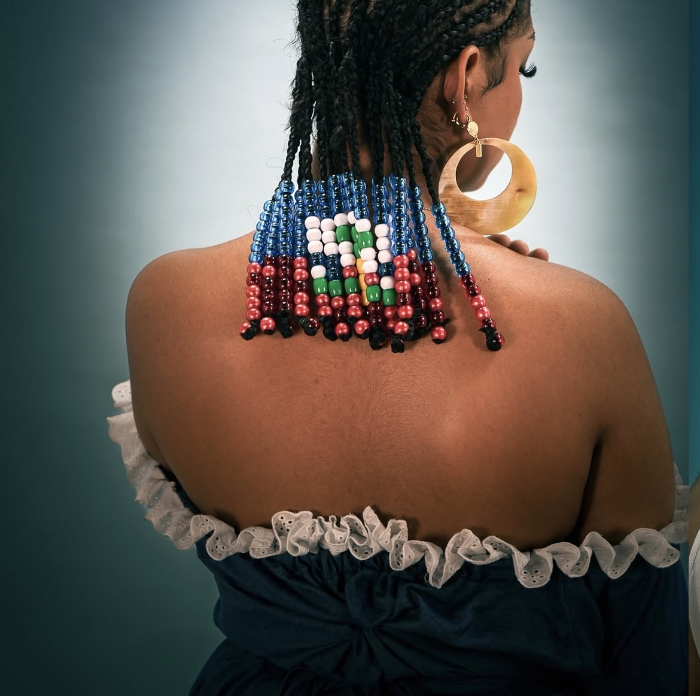
Deuxième chapitre : prolonger l'exploration de l'héritage culturel de la diaspora à travers l'histoire et les traditions de la Jamaïque.
Rendu final
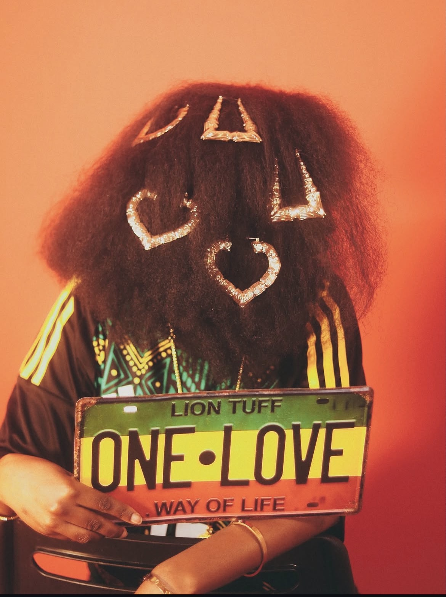
Troisième chapitre : célébrer l'héritage culturel et l'histoire du Sénégal à travers une série visuelle contemporaine et hautement narrative.
Direction artistique pensée comme un pont entre patrimoine et modernité : palette de couleurs inspirée des textiles et paysages locaux, direction photo narrative et grille éditoriale pensée pour le format social-first, reconduite sur les trois épisodes.
Rôle
Stratégie visuelle, cadrage éditorial et pilotage de la production de contenu, du concept à la diffusion, sur chacun des trois épisodes.
Impact
Une identité visuelle cohérente qui valorise la richesse culturelle de chaque pays auprès d'une audience contemporaine et connectée.
Démocratiser la création artistique dans un cadre immersif et urbain conçu pour stimuler l'engagement communautaire.
3éditions réalisées
~50participants en moyenne
4ᵉédition en préparation
Affiches
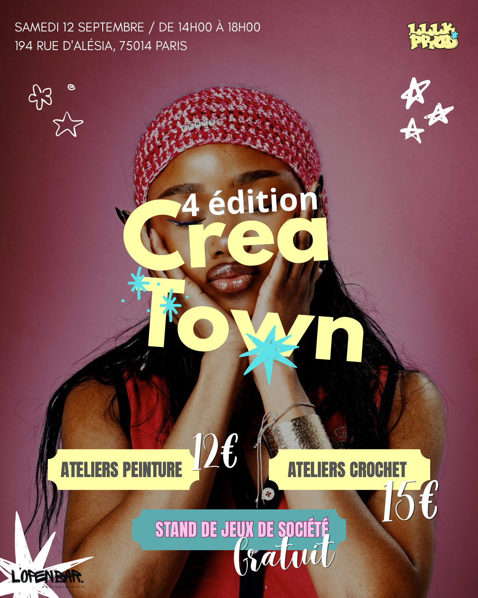
Photos de l'événement
Approche
Conception d'une expérience de marque physique où chaque atelier devient un moment partageable : scénographie urbaine, parcours pensé pour la captation photo/vidéo et animation communautaire en temps réel.
Rôle
Conception de l'expérience événementielle, stratégie de community building et activation du contenu généré par les participants.
Impact
3 éditions déjà réalisées, réunissant en moyenne une cinquantaine de participants, et une 4ᵉ en préparation : la preuve d'un format qui trouve son public.
Révéler l'envers du décor de la scène créative parisienne via un écosystème média multi-format (Long-form ➔ Short-form).
1er épisode disponible, la suite du programme est en préparation
Coulisses (BTS)
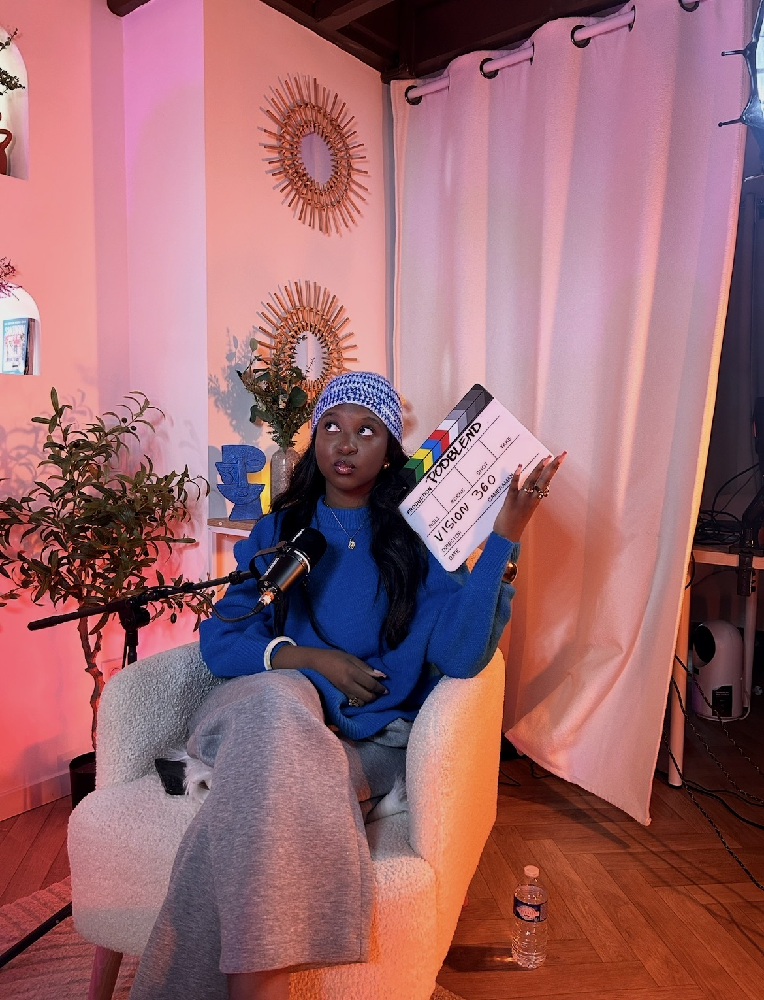
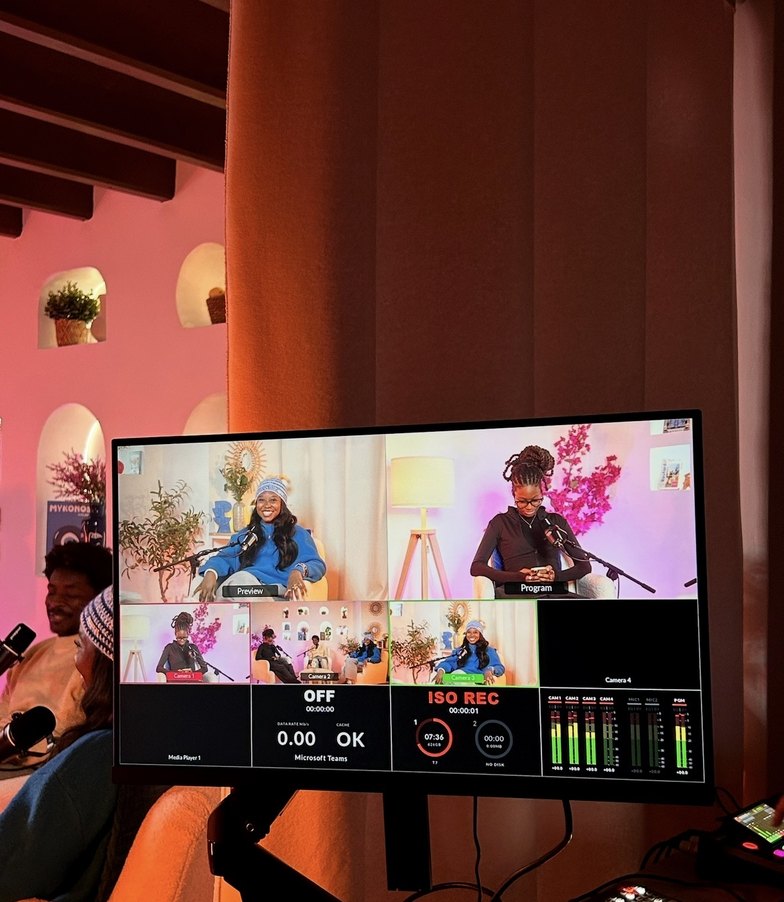
Approche
Construction d'un moteur éditorial pensé pour la démultiplication : tournages long-format repensés en une cascade de formats courts adaptés à chaque plateforme, calendrier de repurposing et ligne éditoriale cohérente.
Rôle
Stratégie de contenu, structuration de la chaîne de production média et pilotage éditorial du repurposing multi-format.
Impact
Un premier épisode qui pose les bases d'un écosystème média pensé pour durer, avec une ligne éditoriale et un moteur de repurposing déjà prêts pour la suite du programme.
Commémorer les 20 ans de l'album B'DAY de Beyoncé, en collaboration avec HelloYouArtist et BeyhiveFrance.
Affiches
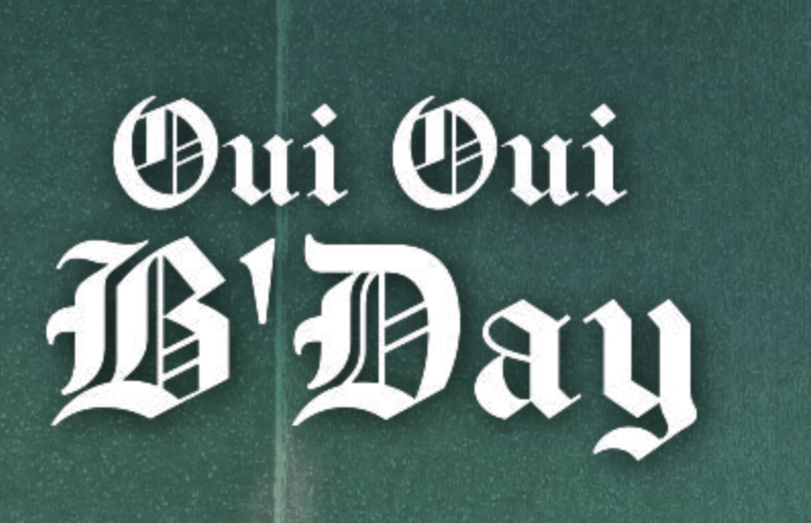
Photos de l'événement
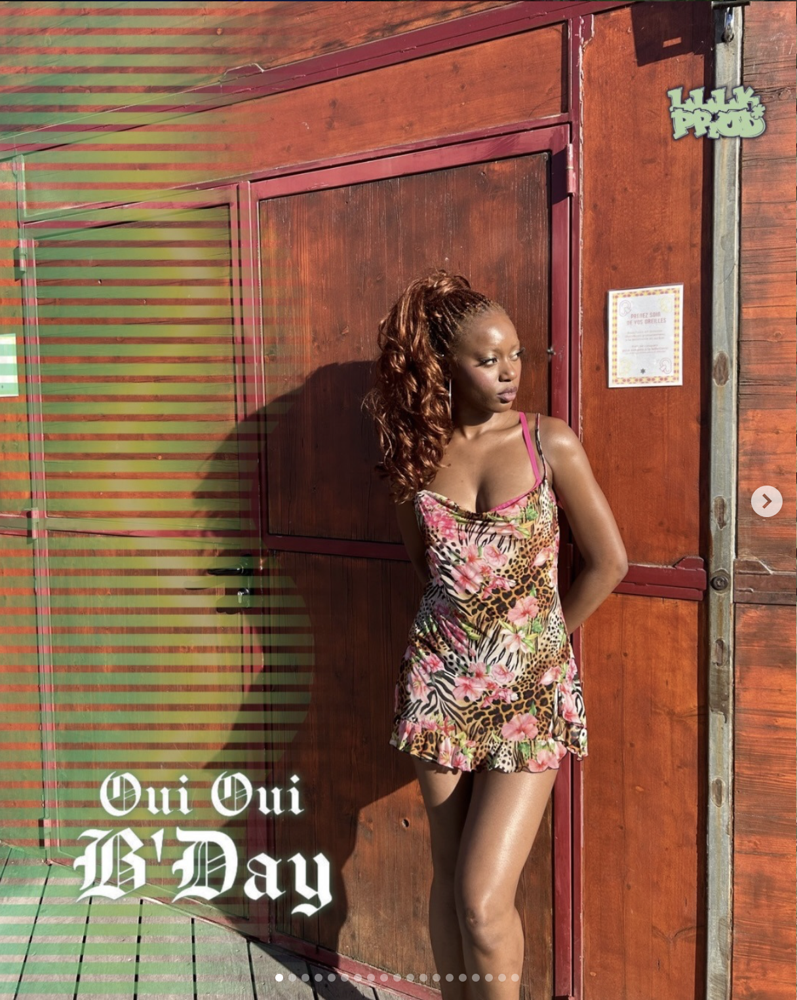
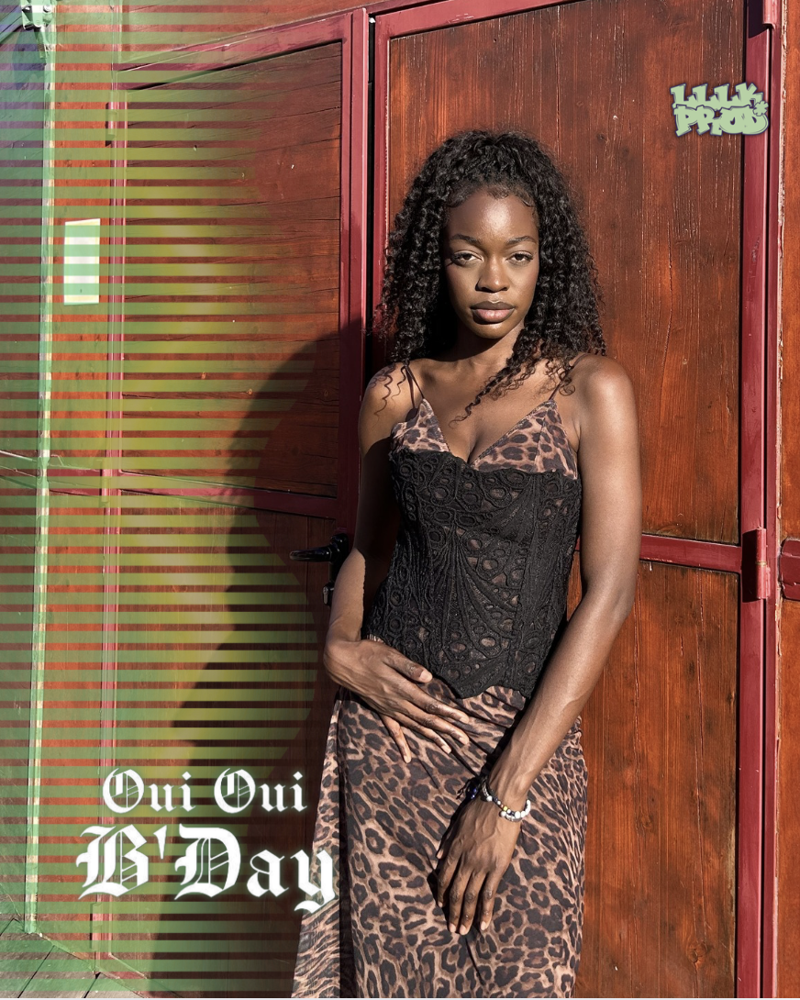
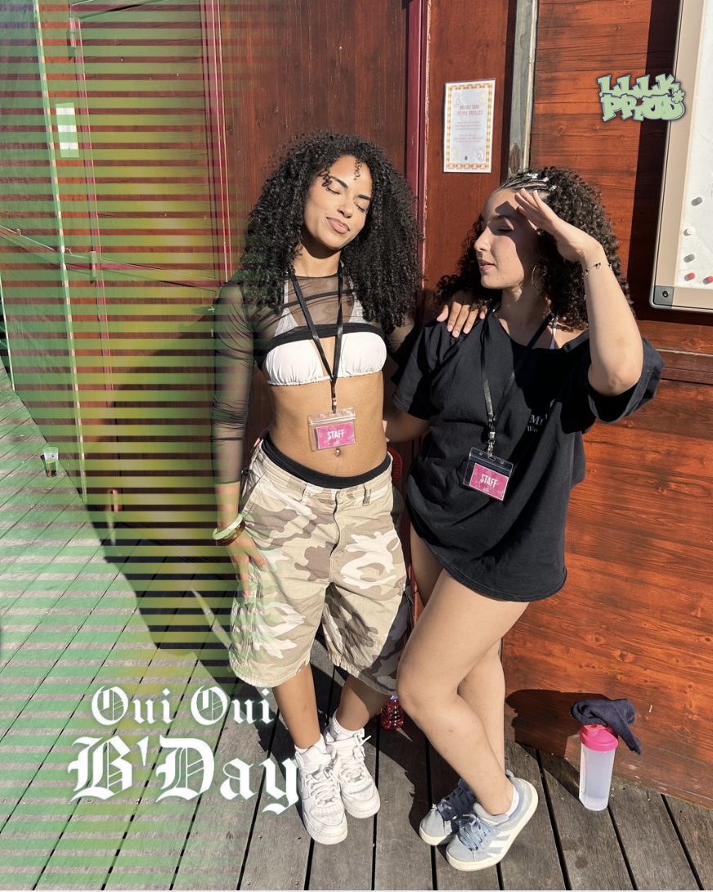
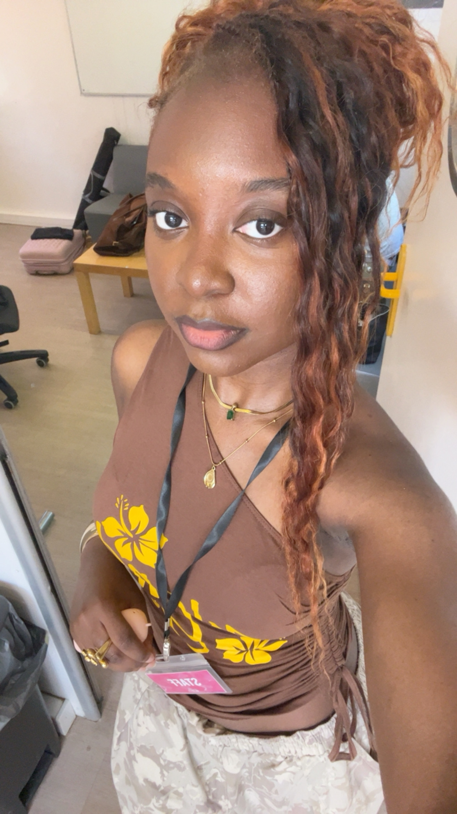
Approche
Un festival pensé comme un hommage collectif, construit en collaboration avec HelloYouArtist et BeyhiveFrance pour célébrer les 20 ans de B'DAY à la croisée de la culture pop et de la communauté fan.
Rôle
lllk.prod était en charge de la création de contenu photo (publié) et de contenu vidéo, qui fera son apparition dans un format long à paraître en septembre 2026.